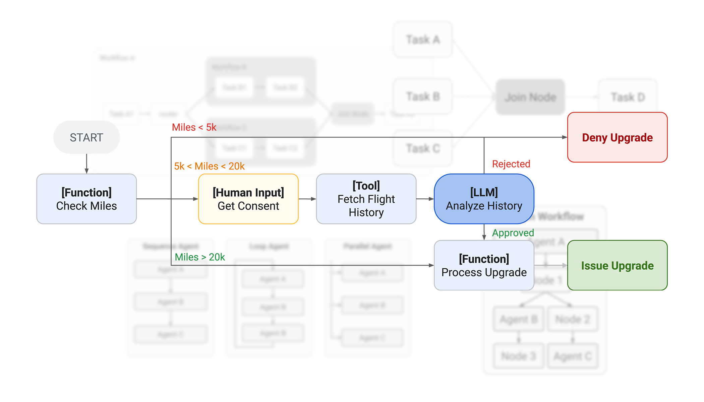
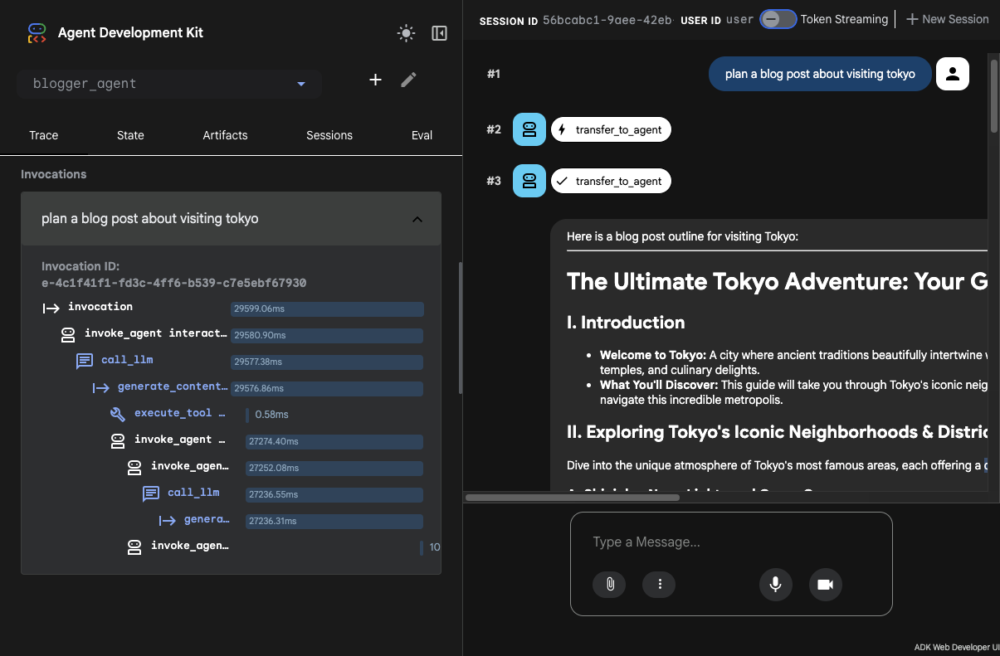
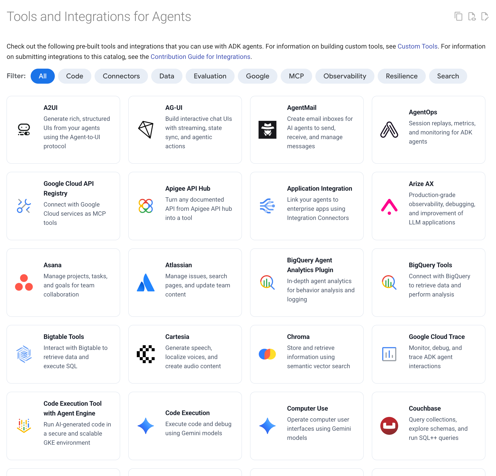

Build production agents, not prototypes.
ADK is the open-source agent development framework that lets you build, debug, and deploy reliable AI agents at enterprise scale. Available in Python, TypeScript, Go, Java, and Kotlin.
from google.adk import Agent from google.adk.tools import google_search agent = Agent( name="researcher", model="gemini-flash-latest", instruction="You help users research topics thoroughly.", tools=[google_search], )
pip install google-adk
Build agents with agents.
Go from idea to coded ADK agent in minutes. Use your favorite AI-enabled developer environment to scaffold, build, test, evaluate, and deploy with Agents CLI.
Learn moreReliable logic. Intelligent reasoning.
Weave deterministic code with adaptive AI reasoning. Orchestrate complex tasks through structured, graph-based architectures, with explicit execution paths and predictable outcomes. New in ADK 2.0!
Learn more
Powerful simplicity. Built for scale.
Start building ADK agents with prompts and tool calls, then grow to multi-agent orchestration, graph-based workflows, performance evaluation, and deployment to world class enterprise services for scalability, reliability, and throughput.
Learn more
Open ecosystem. Connect everything.
ADK's open integration partners connect your agents with existing apps, a wide range of AI models, and extend agent capabilities to access data, add resilience, and evaluate performance.
Learn more
Ready to build agents?
We think one of the best ways to learn is by building, so we've created guides that help you get your development environment set up and run an ADK agent in minutes.
Start buildingDeveloper Community
Build alongside a growing community of developers engineering the next generation of production-ready AI agents. Whether you want to troubleshoot a graph workflow, share a custom Agent Skill, or shape the future of the framework, we want you involved.
Frequently Asked Questions
Still have questions about ADK? Here are some answers:
Can I vibe code agents with ADK?
Yes! ADK is designed to be written by both humans and AI. Connect your favorite coding assistant to our ADK developer Skills and AI-aware developer resources, and generate agents in seconds. Find out more about AI-powered coding of agents in our Coding with AI guide.
What AI models can I use with ADK?
ADK can work with almost any generative AI model. The framework provides easy access to Gemini as well as other leading models, and we provide adapters that let you connect with many other models and model providers, including locally running models. For enterprises, ADK can connect to models on hosted services, including Google Cloud which provides a wide range of models and lets you closely manage performance, reliability, security, access, safety, and costs.
What makes ADK different?
With ADK, we are focused on building an open development framework that lets you build professional, production grade agents, without requiring a pile of code to get started. Our goal is to get you building agents quickly, and let you add functionality and complexity as you need it. ADK provides a basic structure for agents that is easy to build, and that structure is designed with the flexibility to let you extend, expand, and build complex, robust, useful agentic systems. We've put a lot of effort into providing you with development tools for interacting with agents you build, and providing ways to use AI-powered tools for building ADK agents. We are also quite proud of our approach to agent context management and how we manage context to keep it efficient, and also let you tune context management to your needs. We could go on, and if you are interested, you can find more details in our developer docs.
How does ADK handle context management?
Unlike tools that simply paste strings together until the context window overflows, ADK manages your context. We treat context like source code—sessions, memory, tool outputs, and artifacts are assembled into a structured view where every token earns its place. ADK automatically filters irrelevant events, summarizes older conversational turns, lazy-loads artifacts, and tracks token usage. This approach keeps your agents fast, efficient, and reliable by default, while giving you the controls to fully customize how context is managed for complex tasks.
How does ADK deploy to production?
ADK is built for deploy anywhere flexibility. You can containerize and run ADK on your own infrastructure, or take advantage of our native, one-command deployment to Google Cloud. When deploying to Google Cloud via Agent Runtime (Agent Platform), Cloud Run, or GKE, your agents instantly inherit managed infrastructure, built-in authentication, Cloud Trace observability, and enterprise-grade security—all without requiring you to change a single line of your agent code. Develop locally, scale globally.
When should I use an agent framework to work with generative AI?
AI chat conversations can accomplish many tasks, but when you need to accomplish complex, multi-step processes, an agent framework lets you create a managed, repeatable task structure that can run hands-off with minimal human input. Agent frameworks like ADK can automatically initiate tasks, make multiple iterative AI model requests, manage context, handle tool calls, record data, run parallel jobs, handle failures, and resume tasks if they get stopped.